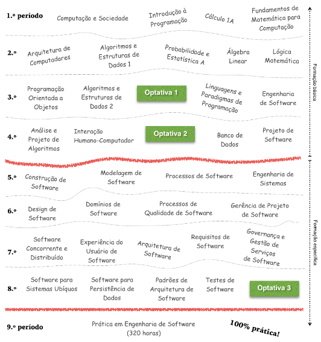
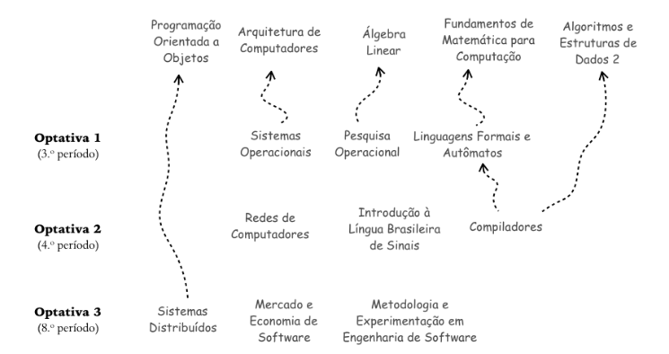
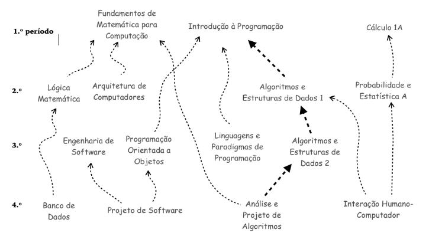

Estrutura Curricular
Matriz Curricular
A matriz curricular do curso perfaz 44 disciplinas, delas 17 disciplinas de formação básica em computação. Em particular, são 4 disciplinas oferecidas pelo Instituto de Matemática e Estatística (IME) e as outras 13 oferecidas pelo INF. Todas elas são obrigatórias e pertencem ao Núcleo Comum (NC), que fornecem uma sólida formação em Computação, o que inclui o recomendado para a formação em Matemática. Além dessas, outras seis de Computação são oferecidas como optativas. As outras 27 são específicas da Engenharia de Software. Todas elas são obrigatórias, fazem parte do Núcleo Específico (NE) e são oferecidas pelo INF.
São nove as disciplinas optativas. O estudante terá que escolher três delas.
Núcleo livre
O Núcleo Livre (NL) é o conjunto de conteúdos voltado para promover a interdisciplinaridade e a transdisciplinaridade, dentre outros objetivos.
A carga horária definida pelo BES para o NL é de 128 horas, que é o mínimo estabelecido pelo Regimento Geral dos Cursos de Graduação (RGCG) da UFG [RGCG]. Tais 128 horas perfazem 4% da carga horária do curso.
Atividades complementares
O estudante do BES deve cumprir o mínimo de 192 horas em atividades complementares para a integralização curricular. Essas horas correspondem a 6% da carga horária do curso.
As atividades complementares contemplam ações de monitoria, produção científica, extensão, produção técnica e de representação e qualificação, dentre outras. O cumprimento das atividades complementares é estabelecido formalmente pelo Regulamento de Atividades Complementares do Bacharelado em Engenharia de Software
Fluxo sugerido
Conforme o diagrama abaixo, as disciplinas estão organizadas em nove períodos letivos. Os quatro primeiros períodos concentram as disciplinas de formação básica em Computação: disciplinas de Computação propriamente ditas e aquelas de Matemática. Os demais períodos incluem disciplinas com ênfase na formação específica em Engenharia de Software.
Pré-requisitos
Existem pré-requisitos entre as disciplinas. Aqueles das disciplinas optativas são exibidos na Figura 3, enquanto aqueles das disciplinas obrigatórias na Figura 4.
Observe que as disciplinas optativas estão agrupadas na Figura 3 conforme as opções oferecidas aos estudantes. Por exemplo, a disciplina OPTATIVA 1, sugerida para ser cursada no 3.º período, será escolhida pelo estudante dentre as seguintes opções: “Sistemas Operacionais”, “Pesquisa Operacional” ou “Linguagens Formais e Autômatos”. Para a disciplina OPTATIVA 2, sugerida para ser cursada no 4.º período, as opções são: “Redes de Computadores”, “Introdução à Língua Brasileira de Sinais” e “Compiladores”. Para a disciplina OPTATIVA 3, sugerida para ser cursada no 8.º período, as opções são: “Sistemas Distribuídos”, “Mercado e Economia de Software” e “Metodologia e Experimentação em Engenharia de Software”.
Ainda convém destacar que algumas disciplinas optativas dependem de outras obrigatórias. Por exemplo, conforme ilustrado abaixo, “Pesquisa Operacional” tem como pré-requisito a disciplina obrigatória “Álgebra Linear”.
Todos os pré-requisitos das disciplinas obrigatórias são exibidos na Figura 4. As disciplinas seguem alinhadas, na horizontal, do primeiro até o último (nono) período do curso. Em particular, o caminho mais longo, não é o caminho crítico, encontra-se devidamente destacado dos demais.
